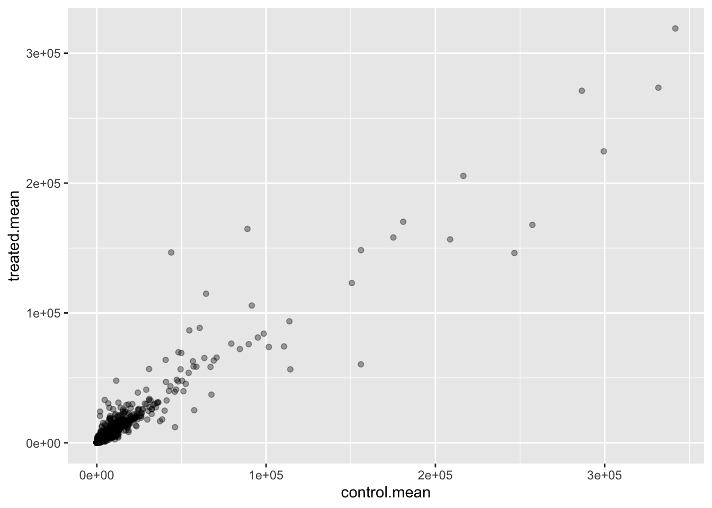
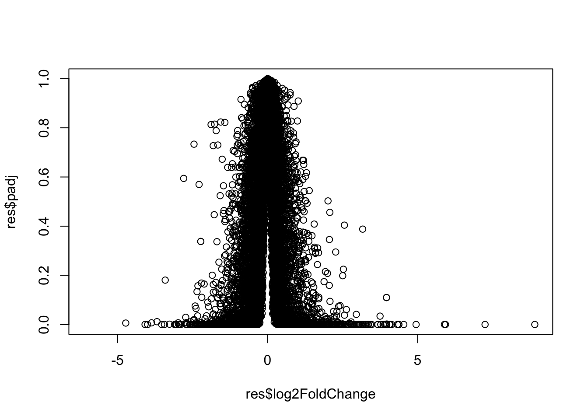
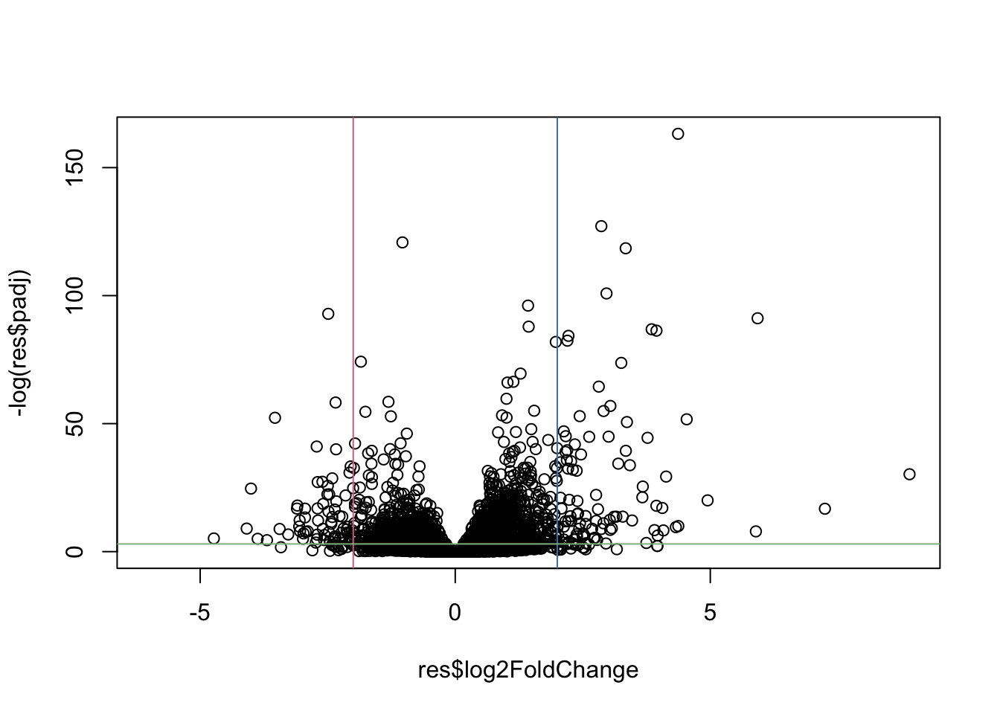
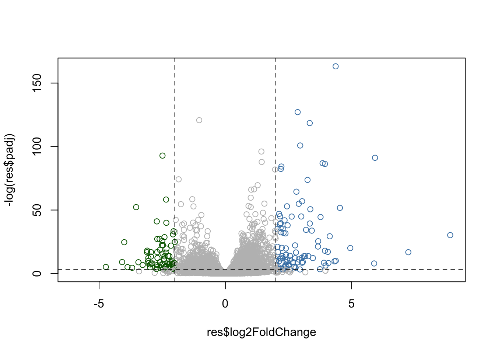
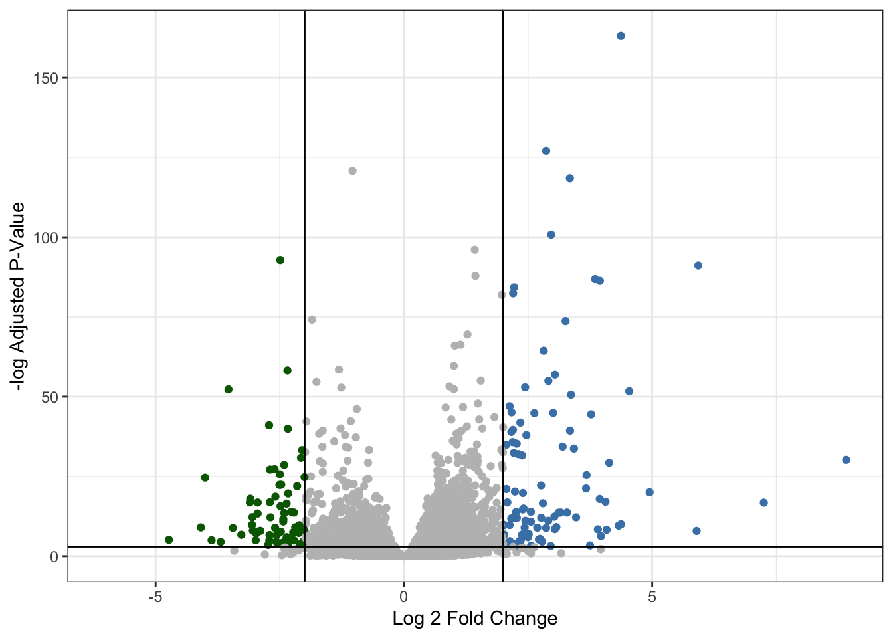
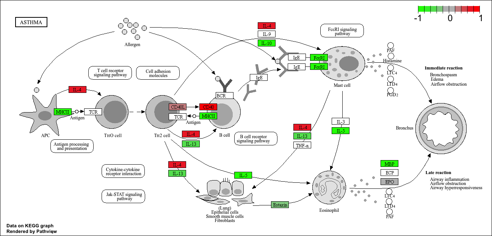

counts <- read.csv("airway_scaledcounts.csv", row.names = 1)
metadata <- read.csv("airway_metadata.csv")Class 13: RNA Seq with DESeq2
Background
Today we will perform an RNASeq analysis of the effects of a common sertoid on airway cells.
In particular, dexamethasone (hereafter just called “dex”) on different airway smooth muscle cell lines (ASM cells).
Data Import
We need two different inputs:
- countData: with genes in row and experiments in columns
- colData: meta data that describes the column in countData
A wee peak at counts and meta data
head(counts) SRR1039508 SRR1039509 SRR1039512 SRR1039513 SRR1039516
ENSG00000000003 723 486 904 445 1170
ENSG00000000005 0 0 0 0 0
ENSG00000000419 467 523 616 371 582
ENSG00000000457 347 258 364 237 318
ENSG00000000460 96 81 73 66 118
ENSG00000000938 0 0 1 0 2
SRR1039517 SRR1039520 SRR1039521
ENSG00000000003 1097 806 604
ENSG00000000005 0 0 0
ENSG00000000419 781 417 509
ENSG00000000457 447 330 324
ENSG00000000460 94 102 74
ENSG00000000938 0 0 0metadata id dex celltype geo_id
1 SRR1039508 control N61311 GSM1275862
2 SRR1039509 treated N61311 GSM1275863
3 SRR1039512 control N052611 GSM1275866
4 SRR1039513 treated N052611 GSM1275867
5 SRR1039516 control N080611 GSM1275870
6 SRR1039517 treated N080611 GSM1275871
7 SRR1039520 control N061011 GSM1275874
8 SRR1039521 treated N061011 GSM1275875Q1. How many genes are in this dataset?
nrow(counts)[1] 38694Q2. How many ‘control’ cell lines do we have?
sum(metadata$dex == "control") [1] 4table(metadata$dex)
control treated
4 4 Differential gene expression
We have four replicate drug treated and control (no drug) columns/experiments in our counts object
We want one “mean” value for each gene (rows) in “treated” (drug) and one mean value for each gene in “control” columns.
Step 1: Find all “control” columns in counts Step 2: Extract these columns to a new object called control.counts Step 3: Then calculate the mean value for each gene
Step 1
control.inds <- metadata$dex == "control"Step 2
control.counts <- counts[, control.inds]Step 3
control.mean <- rowMeans(control.counts)
head(control.mean)ENSG00000000003 ENSG00000000005 ENSG00000000419 ENSG00000000457 ENSG00000000460
900.75 0.00 520.50 339.75 97.25
ENSG00000000938
0.75 Q. Now do the same thing for the “treated” columns/experiments…
Step 1
treated.inds <- metadata$dex == "treated"Step 2
treated.counts <- counts[, treated.inds]Step 3
treated.mean <- rowMeans(treated.counts)
head(treated.mean)ENSG00000000003 ENSG00000000005 ENSG00000000419 ENSG00000000457 ENSG00000000460
658.00 0.00 546.00 316.50 78.75
ENSG00000000938
0.00 meancounts <- data.frame(control.mean, treated.mean)A quick plot
library(ggplot2)
ggplot(meancounts) + aes (control.mean, treated.mean) + geom_point(alpha = 0.35) 
Let’s log transform this count data:
plot(meancounts, log = "xy")Warning in xy.coords(x, y, xlabel, ylabel, log): 15032 x values <= 0 omitted
from logarithmic plotWarning in xy.coords(x, y, xlabel, ylabel, log): 15281 y values <= 0 omitted
from logarithmic plot
N.B. We most often use log2 for this type of data as it makes the interpretation much more straightforward
Treated/Control is often called “fold-change”
# If there was no change we would have a log2 fc of 0
log2(10/10)[1] 0# If we had double trancript around we would have a log2-fc of 1
log2(20/10)[1] 1#If we had half as much trancript around we would have a log2-fc of -1
log2(5/10)[1] -1Q. Calculate a log2 fold change value for all our genes and add it as a new column to our
meancountsobject.
meancounts$log2fc <- log2(meancounts$treated.mean/
meancounts$control.mean)
head(meancounts) control.mean treated.mean log2fc
ENSG00000000003 900.75 658.00 -0.45303916
ENSG00000000005 0.00 0.00 NaN
ENSG00000000419 520.50 546.00 0.06900279
ENSG00000000457 339.75 316.50 -0.10226805
ENSG00000000460 97.25 78.75 -0.30441833
ENSG00000000938 0.75 0.00 -InfThere are some “funky” log2fc values (NaN and -Inf here that come about when ever we have 0 mean count values. Typically we would remove these genes from any further analysis - as we can’t say anything about them if we have no data for them.
DESeq Analysis
Let’s do this analysis with an estimate of statistical significane using the DESeq2 package
library(DESeq2)Loading required package: S4VectorsLoading required package: stats4Loading required package: BiocGenericsLoading required package: generics
Attaching package: 'generics'The following objects are masked from 'package:base':
as.difftime, as.factor, as.ordered, intersect, is.element, setdiff,
setequal, union
Attaching package: 'BiocGenerics'The following objects are masked from 'package:stats':
IQR, mad, sd, var, xtabsThe following objects are masked from 'package:base':
anyDuplicated, aperm, append, as.data.frame, basename, cbind,
colnames, dirname, do.call, duplicated, eval, evalq, Filter, Find,
get, grep, grepl, is.unsorted, lapply, Map, mapply, match, mget,
order, paste, pmax, pmax.int, pmin, pmin.int, Position, rank,
rbind, Reduce, rownames, sapply, saveRDS, table, tapply, unique,
unsplit, which.max, which.min
Attaching package: 'S4Vectors'The following object is masked from 'package:utils':
findMatchesThe following objects are masked from 'package:base':
expand.grid, I, unnameLoading required package: IRangesLoading required package: GenomicRangesLoading required package: SeqinfoLoading required package: SummarizedExperimentLoading required package: MatrixGenericsLoading required package: matrixStats
Attaching package: 'MatrixGenerics'The following objects are masked from 'package:matrixStats':
colAlls, colAnyNAs, colAnys, colAvgsPerRowSet, colCollapse,
colCounts, colCummaxs, colCummins, colCumprods, colCumsums,
colDiffs, colIQRDiffs, colIQRs, colLogSumExps, colMadDiffs,
colMads, colMaxs, colMeans2, colMedians, colMins, colOrderStats,
colProds, colQuantiles, colRanges, colRanks, colSdDiffs, colSds,
colSums2, colTabulates, colVarDiffs, colVars, colWeightedMads,
colWeightedMeans, colWeightedMedians, colWeightedSds,
colWeightedVars, rowAlls, rowAnyNAs, rowAnys, rowAvgsPerColSet,
rowCollapse, rowCounts, rowCummaxs, rowCummins, rowCumprods,
rowCumsums, rowDiffs, rowIQRDiffs, rowIQRs, rowLogSumExps,
rowMadDiffs, rowMads, rowMaxs, rowMeans2, rowMedians, rowMins,
rowOrderStats, rowProds, rowQuantiles, rowRanges, rowRanks,
rowSdDiffs, rowSds, rowSums2, rowTabulates, rowVarDiffs, rowVars,
rowWeightedMads, rowWeightedMeans, rowWeightedMedians,
rowWeightedSds, rowWeightedVarsLoading required package: BiobaseWelcome to Bioconductor
Vignettes contain introductory material; view with
'browseVignettes()'. To cite Bioconductor, see
'citation("Biobase")', and for packages 'citation("pkgname")'.
Attaching package: 'Biobase'The following object is masked from 'package:MatrixGenerics':
rowMediansThe following objects are masked from 'package:matrixStats':
anyMissing, rowMediansDESeq (like many bioconductor packages) want it’s input data in a very specific way.
dds <- DESeqDataSetFromMatrix(countData = counts,
colData = metadata,
design = ~dex)converting counts to integer modeWarning in DESeqDataSet(se, design = design, ignoreRank): some variables in
design formula are characters, converting to factorsRun the DESeg analysis pipeline
The main function is called DESeq()
dds <- DESeq(dds)estimating size factorsestimating dispersionsgene-wise dispersion estimatesmean-dispersion relationshipfinal dispersion estimatesfitting model and testingres <- results(dds)
head(res)log2 fold change (MLE): dex treated vs control
Wald test p-value: dex treated vs control
DataFrame with 6 rows and 6 columns
baseMean log2FoldChange lfcSE stat pvalue
<numeric> <numeric> <numeric> <numeric> <numeric>
ENSG00000000003 747.194195 -0.3507030 0.168246 -2.084470 0.0371175
ENSG00000000005 0.000000 NA NA NA NA
ENSG00000000419 520.134160 0.2061078 0.101059 2.039475 0.0414026
ENSG00000000457 322.664844 0.0245269 0.145145 0.168982 0.8658106
ENSG00000000460 87.682625 -0.1471420 0.257007 -0.572521 0.5669691
ENSG00000000938 0.319167 -1.7322890 3.493601 -0.495846 0.6200029
padj
<numeric>
ENSG00000000003 0.163035
ENSG00000000005 NA
ENSG00000000419 0.176032
ENSG00000000457 0.961694
ENSG00000000460 0.815849
ENSG00000000938 NA36000 * 0.05[1] 1800Volcano Plot
This is a main summary results figure from these kinds of studies. It is a plot of Log2-Foldchange vs. (Adjusted) P-value
plot(res$log2FoldChange,
res$padj)
Again this y-axis is higly needs log transforming and we can flip the y-axis with a minus sign so it looks like every other volcano plot.
plot(res$log2FoldChange,
-log(res$padj))
abline(v = -2, col = "palevioletred")
abline(v = +2, col = "steelblue")
abline(h = -log(0.05), col = "darkseagreen")
Start with a default base color “gray”
#custom colors
mycols <- rep("gray", nrow(res))
mycols[res$log2FoldChange > 2] <- "steelblue"
mycols[res$log2FoldChange < -2] <- "darkgreen"
mycols[res$padj >= 0.05] <- "grey"
#volcano plot
plot(res$log2FoldChange,
-log(res$padj),
col=mycols)
#cut of dash lines
abline(v = c(-2, +2), lty = 2)
abline(h = -log(0.05), lty = 2)
Q. Make a presentation quality ggplot version for this plot. Include clear axis labels, a clean theme, your custom colors, cut-off lines and a plot titles
library(ggplot2)
ggplot(res) +
aes(log2FoldChange,
-log(padj)) +
geom_point(colour = mycols) +
labs(x = "Log 2 Fold Change",
y = "-log Adjusted P-Value") +
geom_vline(xintercept = c(-2,2)) +
geom_hline(yintercept = -log(0.05)) +
theme_bw()Warning: Removed 23549 rows containing missing values or values outside the scale range
(`geom_point()`).
Save our results
Write a CSV file
write.csv(res, file="results.csv")Add annotation data
We need to add missing annotation data to our main res result object. This includes the common gene “symbol”
head(res)log2 fold change (MLE): dex treated vs control
Wald test p-value: dex treated vs control
DataFrame with 6 rows and 6 columns
baseMean log2FoldChange lfcSE stat pvalue
<numeric> <numeric> <numeric> <numeric> <numeric>
ENSG00000000003 747.194195 -0.3507030 0.168246 -2.084470 0.0371175
ENSG00000000005 0.000000 NA NA NA NA
ENSG00000000419 520.134160 0.2061078 0.101059 2.039475 0.0414026
ENSG00000000457 322.664844 0.0245269 0.145145 0.168982 0.8658106
ENSG00000000460 87.682625 -0.1471420 0.257007 -0.572521 0.5669691
ENSG00000000938 0.319167 -1.7322890 3.493601 -0.495846 0.6200029
padj
<numeric>
ENSG00000000003 0.163035
ENSG00000000005 NA
ENSG00000000419 0.176032
ENSG00000000457 0.961694
ENSG00000000460 0.815849
ENSG00000000938 NAWe will use R and bioconductor to do this “ID mapping”
library("AnnotationDbi")
library("org.Hs.eg.db")Let’s see what database we can use for translation/mapping…
columns(org.Hs.eg.db) [1] "ACCNUM" "ALIAS" "ENSEMBL" "ENSEMBLPROT" "ENSEMBLTRANS"
[6] "ENTREZID" "ENZYME" "EVIDENCE" "EVIDENCEALL" "GENENAME"
[11] "GENETYPE" "GO" "GOALL" "IPI" "MAP"
[16] "OMIM" "ONTOLOGY" "ONTOLOGYALL" "PATH" "PFAM"
[21] "PMID" "PROSITE" "REFSEQ" "SYMBOL" "UCSCKG"
[26] "UNIPROT" We can use the mapIds() now to “translate” between any of these databases
res$symbol <- mapIds(org.Hs.eg.db,
keys=row.names(res), # Our genenames
keytype="ENSEMBL", # The format of our genenames
column="SYMBOL", # The new format we want to add
multiVals="first")'select()' returned 1:many mapping between keys and columnsQ. Also add “ENTREZID”, “GENENAME”
res$entrez <- mapIds(org.Hs.eg.db,
keys=row.names(res),
keytype="ENSEMBL",
column="ENTREZID",
multiVals="first")'select()' returned 1:many mapping between keys and columnsres$genename <- mapIds(org.Hs.eg.db,
keys=row.names(res),
keytype="ENSEMBL",
column="GENENAME",
multiVals="first")'select()' returned 1:many mapping between keys and columnshead(res)log2 fold change (MLE): dex treated vs control
Wald test p-value: dex treated vs control
DataFrame with 6 rows and 9 columns
baseMean log2FoldChange lfcSE stat pvalue
<numeric> <numeric> <numeric> <numeric> <numeric>
ENSG00000000003 747.194195 -0.3507030 0.168246 -2.084470 0.0371175
ENSG00000000005 0.000000 NA NA NA NA
ENSG00000000419 520.134160 0.2061078 0.101059 2.039475 0.0414026
ENSG00000000457 322.664844 0.0245269 0.145145 0.168982 0.8658106
ENSG00000000460 87.682625 -0.1471420 0.257007 -0.572521 0.5669691
ENSG00000000938 0.319167 -1.7322890 3.493601 -0.495846 0.6200029
padj symbol entrez genename
<numeric> <character> <character> <character>
ENSG00000000003 0.163035 TSPAN6 7105 tetraspanin 6
ENSG00000000005 NA TNMD 64102 tenomodulin
ENSG00000000419 0.176032 DPM1 8813 dolichyl-phosphate m..
ENSG00000000457 0.961694 SCYL3 57147 SCY1 like pseudokina..
ENSG00000000460 0.815849 FIRRM 55732 FIGNL1 interacting r..
ENSG00000000938 NA FGR 2268 FGR proto-oncogene, ..Save annotated results to a CSV file
write.csv(res, file="results.csv")Pathway analysis
What known biological pathways do our differentially expressed genes overlap with (i.e. play a role in)?
There lot’s of bioconductor packages to do this type of analysis.
We will use one of the oldest called gage along with pathview to render nice pics of the pathways we find.
We can install these with the command:BiocManager::install( c("pathview", "gage", "gageData") )
library(pathview)##############################################################################
Pathview is an open source software package distributed under GNU General
Public License version 3 (GPLv3). Details of GPLv3 is available at
http://www.gnu.org/licenses/gpl-3.0.html. Particullary, users are required to
formally cite the original Pathview paper (not just mention it) in publications
or products. For details, do citation("pathview") within R.
The pathview downloads and uses KEGG data. Non-academic uses may require a KEGG
license agreement (details at http://www.kegg.jp/kegg/legal.html).
##############################################################################library(gage)library(gageData)
data(kegg.sets.hs)
# Examine the first 2 pathways in this kegg set for humans
head(kegg.sets.hs, 2)$`hsa00232 Caffeine metabolism`
[1] "10" "1544" "1548" "1549" "1553" "7498" "9"
$`hsa00983 Drug metabolism - other enzymes`
[1] "10" "1066" "10720" "10941" "151531" "1548" "1549" "1551"
[9] "1553" "1576" "1577" "1806" "1807" "1890" "221223" "2990"
[17] "3251" "3614" "3615" "3704" "51733" "54490" "54575" "54576"
[25] "54577" "54578" "54579" "54600" "54657" "54658" "54659" "54963"
[33] "574537" "64816" "7083" "7084" "7172" "7363" "7364" "7365"
[41] "7366" "7367" "7371" "7372" "7378" "7498" "79799" "83549"
[49] "8824" "8833" "9" "978" The main gage() function that does the work wants a simple vector as input.
foldchanges <- res$log2FoldChange
names(foldchanges) <- res$symbol
head(foldchanges) TSPAN6 TNMD DPM1 SCYL3 FIRRM FGR
-0.35070302 NA 0.20610777 0.02452695 -0.14714205 -1.73228897 The KEGG databases use ENTREZidds so we need to provide these in our input vector for gage:
names(foldchanges) <- res$entrezNow we can run gage()
# Get the results
keggres = gage(foldchanges, gsets=kegg.sets.hs)What is in the output object keggress
attributes(keggres)$names
[1] "greater" "less" "stats" # Look at the first three down (less) pathways
head(keggres$less, 3) p.geomean stat.mean p.val
hsa05332 Graft-versus-host disease 0.0004250461 -3.473346 0.0004250461
hsa04940 Type I diabetes mellitus 0.0017820293 -3.002352 0.0017820293
hsa05310 Asthma 0.0020045888 -3.009050 0.0020045888
q.val set.size exp1
hsa05332 Graft-versus-host disease 0.09053483 40 0.0004250461
hsa04940 Type I diabetes mellitus 0.14232581 42 0.0017820293
hsa05310 Asthma 0.14232581 29 0.0020045888We can use the pathview function to render a figure of any of these pathways along with annotation for our DEGs.
Let’s see the hsa05310 asthma pathway in our DEGs colored up
pathview(gene.data=foldchanges, pathway.id="hsa05310")'select()' returned 1:1 mapping between keys and columnsInfo: Working in directory /Users/nhidinh/Desktop/BIMM143/class 13Info: Writing image file hsa05310.pathview.png
Q. Can you render and insert here the pathway figure for “Graft-versus-host-disease” and “Type I diabetes”?
pathview(gene.data=foldchanges, pathway.id="hsa05332")'select()' returned 1:1 mapping between keys and columnsInfo: Working in directory /Users/nhidinh/Desktop/BIMM143/class 13Info: Writing image file hsa05332.pathview.pngpathview(gene.data=foldchanges, pathway.id="hsa04940")'select()' returned 1:1 mapping between keys and columnsInfo: Working in directory /Users/nhidinh/Desktop/BIMM143/class 13Info: Writing image file hsa04940.pathview.png